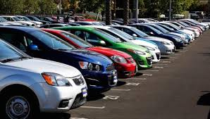
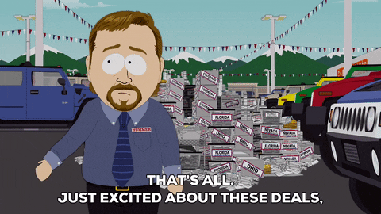
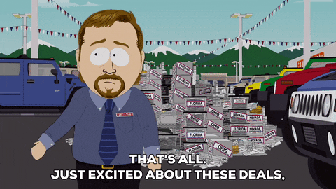

A used car, a pre-owned vehicle, or a secondhand car, is a vehicle that has previously had one or more retail owners. New cars are great, but used cars offer big financial advantages thanks to depreciation. The average car loses 35 percent of its value in the first three years of its life which is great news for drivers shopping for a good deal on the used market. Mojo's used cars will get you the best of all cars at affordable rate and also helps you in selling your used car.
The value of a car depends on factors including its history, mileage and condition. Accident history impacts auto value, so make sure you’re aware of everything that’s happened in the vehicle’s lifetime, and be transparent about that information with the buyer. Did you know 61% of buyers are open to a car that’s been in an accident? Being upfront with the information will help you build trust with the buyer, and give them the tools they need to make sure any damage has been properly repaired. 
If you're looking to sell your used car, you may not know where to start. We can help make sure you’re set up for a quick and easy sale while getting the best price. Here are the steps you should to take when selling a used car
 
